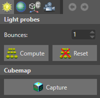
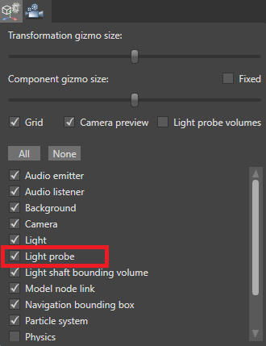

Light probes
Beginner Designer Artist
Light probes capture the lighting at the position you place them. They simulate indirect light, the effect of light bouncing off surfaces and illuminating other surfaces. They can make a dramatic difference to the mood and appearance of your scene.
The screenshot below shows a point light surrounded by light probes in the Scene Editor. The probes form 3D areas (shown in the Scene Editor by the yellow wireframe connecting the probes).
Stride colors pixels within a light probe area to simulate the effect of light bouncing from nearby surfaces. To find a color for a given pixel, Stride interpolates from the lighting captured by the four surrounding light probes.
For example, in the screenshot below, notice how the red of the wall is reflected on the other objects. In the Scene Editor, this is also visible on the surface of the light probes themselves.
Light probes affect all objects in the area they cover, including static and dynamic objects. You don't need to enable any extra options on the entities that light probes affect.
1. Enable light probes in the graphics compositor
Stride enables light probes by default in new projects. To make sure light probes are enabled:
In the Asset View (in the bottom pane by default), double-click the Graphics Compositor asset.

The graphics compositor editor opens.

Select the forward renderer node.
In the Property Grid (on the right by default), make sure the Light probes checkbox is selected.
For more information about the graphics compositor, see the Graphics compositor page.
2. Create a light probe
Right-click the scene or Entity Tree and select Light > Light probe.

Alternatively, create an empty entity and add a Light probe component in the Property Grid.

Light probes appear as spheres in the Scene Editor. Before you capture a light bounce for the first time, they have a completely black surface.
3. Place light probes
Light probes must be placed in a way that creates a 3D volume. This means:
You need at least four light probes in the scene — enough to create the four points of a tetrahedron, as below:

At least one light probe must be on a different plane from the rest. For example, the probes in the screenshot below won't work, as they are on a flat plane and create no volume:

A typical method is to place light probes in a grid across your scene covering a general area, as in the screenshots below:


Tip
You can quickly duplicate light probes just like other entities. To do this, select a light probe, hold Ctrl, and move it with the mouse.
4. Capture lighting
In the Scene Editor toolbar, click the lighting options button to open the lighting options menu.

Next to Bounces, set the number of light bounces you want to capture.
Multiple bounces simulate the effect of light bouncing between surfaces multiple times. This generally has the effect of brightening the lighting. Three or four bounces should be enough; beyond this, changes are almost unnoticeable. The number of bounces has no impact on runtime performance.
To capture the lighting, click Compute.
You can see the lighting on the surface of the light probes in the Scene Editor.
Reset light probes
To reset the light probes, in the lighting options menu, click Reset. This is useful after you change the lights in your scene and need to capture the lighting from scratch.
Show and hide light probes in the Scene Editor
Under the gizmo options in the Scene Editor toolbar, use the Light probes checkbox.

Show and hide light probe volumes in the Scene Editor
Under the gizmo options in the Scene Editor toolbar, use the Light probe volumes checkbox.